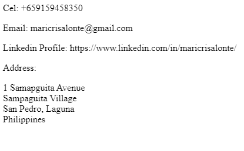

Professional Portfolio

Career History
Explore my professional journey as a QA Analyst at Roya.com Media Design Inc. since April 2022, where I've contributed to enhancing software quality and user experience.
View Career Details
Certificates & Training
Professional certifications including MySQL Database Workshop, Software Quality Assurance Manual Testing, and various educational achievements.
View Certificates
Get In Touch
Ready to discuss QA opportunities or collaborate on testing projects? Feel free to reach out through any of the provided contact methods.
Contact MeCore Competencies
Performance Analysis
Analyzing and monitoring product performance across different platforms and environments.
Responsive Testing
QA sites responsiveness on different screen sizes, especially mobile and tablet landscape view.
Functional Testing
Comprehensive functional testing including content check, inner page design, forms, and custom fields validation.
User Experience Validation
Ensuring user experience meets system specifications and providing recommendations for improvements.
Bug Reporting
Systematic reporting of bugs and errors to development teams with detailed documentation.
Quality Assurance
Ensuring quality throughout the software development lifecycle with comprehensive testing strategies.
Professional Experience Highlights
QA Analyst
Currently working as a QA Analyst, focusing on comprehensive testing strategies, performance monitoring, and ensuring optimal user experience across various digital platforms.
- Performance analysis and monitoring
- Cross-platform responsiveness testing
- Functional testing and validation
- Bug identification and reporting
Freelance QA Tester
Executed manual test cases, analyzed system specifications, and provided comprehensive quality assurance for various software projects.
- Manual test case execution
- System specification analysis
- Quality assurance documentation
- Cross-browser compatibility testing